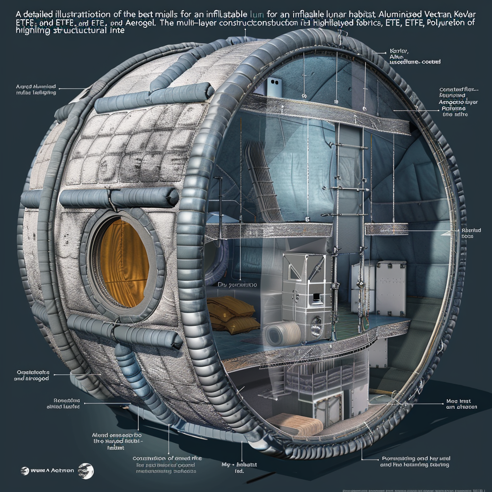

Advanced Habitat Design and Materials
Habitat Structure Overview

Purpose and Importance
- Purpose: The habitat structure is designed to ensure the safe and sustainable habitation of humans in challenging environments such as space or other planets.
- Importance: It serves as a protective shield against external environmental factors while providing a functional living and working space for crew members.
Structure Design
Above-Ground Portion
- Technology: Utilizes both pre-made deployable structures and 3D-printed structures.
- Advantages: Offers flexibility in design and construction speed, adapting to mission-specific needs and environmental conditions.
Underground Portion
- Preferred Technology: Inflatable structures combined with traditional construction techniques and 3D printing.
- Advantages: Provides enhanced radiation protection and thermal insulation, crucial for long-term human habitation. Additionally, it maximizes available space for essential functions and living quarters.
Key Features
- Radiation Protection: Integrates materials and design strategies to shield inhabitants from harmful cosmic radiation and solar particles.
- Thermal Control: Utilizes advanced insulation techniques to maintain stable internal temperatures despite extreme external conditions.
- Modular Design: Allows for scalability and adaptability, accommodating future expansion and technological upgrades.
- Integration of Systems: Ensures seamless operation of life support systems, energy production, waste management, and communication infrastructure.
- Safety and Emergency Preparedness: Incorporates redundant systems and emergency protocols to safeguard crew members during unforeseen events.
Sustainability Considerations
- Resource Utilization: Promotes efficient use of available resources, including water recycling, waste management, and sustainable energy generation.
- Longevity and Maintenance: Designs for durability and ease of maintenance to support extended missions and reduce dependency on resupply missions.
- Environmental Impact: Minimizes environmental footprint through responsible construction practices and recycling technologies.
Future Prospects
- Research and Innovation: Continues to drive advancements in habitat technology through ongoing research in materials science, robotics, and autonomous construction methods.
- Human-Centric Design: Focuses on enhancing living conditions and psychological well-being of crew members through ergonomic design and recreational spaces.
Materials for Lunar Habitat Construction

Best Materials for Inflatable Structures
Vectran
- Properties: High-performance thermoplastic multifilament yarn with exceptional tensile strength, low elongation, and high resistance to cuts and abrasion.
- Benefits: Used in aerospace applications due to its durability and ability to withstand extreme conditions, providing excellent structural support for the inflatable habitat.
Kevlar
- Properties: Aramid fiber known for its high tensile strength-to-weight ratio and resistance to impact and heat.
- Benefits: Adds additional structural integrity and puncture resistance, ideal for the outer layers of the habitat to protect against micrometeorites and other impacts.
Aluminized Mylar
- Properties: Polyester film known for its reflective properties, excellent barrier to heat and radiation when aluminized.
- Benefits: Used as a reflective layer in the multi-layer insulation (MLI) blankets, providing thermal control and protection against solar and cosmic radiation.
Polyurethane-Coated Fabrics
- Properties: Provides waterproofing, flexibility, and resistance to environmental degradation.
- Benefits: Serves as the innermost layer of the inflatable structure, ensuring airtightness and preventing leaks.
ETFE (Ethylene Tetrafluoroethylene)
- Properties: High strength, corrosion resistance, and ability to withstand a wide range of temperatures.
- Benefits: Durable, lightweight films used in construction of the inflatable habitat, beneficial for lighting and plant growth within the habitat.
Aerogel
- Properties: Highly porous, lightweight materials with exceptional insulating properties.
- Benefits: Integrated into the habitat’s walls for additional thermal insulation without adding significant weight.
Multi-Layer Construction
- Outer Layer: Kevlar reinforced with Vectran for structural integrity, impact resistance, and protection against micrometeorites.
- Intermediate Layers: Aluminized Mylar as part of Multi-Layer Insulation (MLI) blankets for thermal control and radiation protection.
- Inner Layer: Polyurethane-coated fabrics or ETFE for airtightness and preventing leaks.
- Insulation Layer: Aerogel blankets for thermal insulation, maintaining a stable internal temperature.